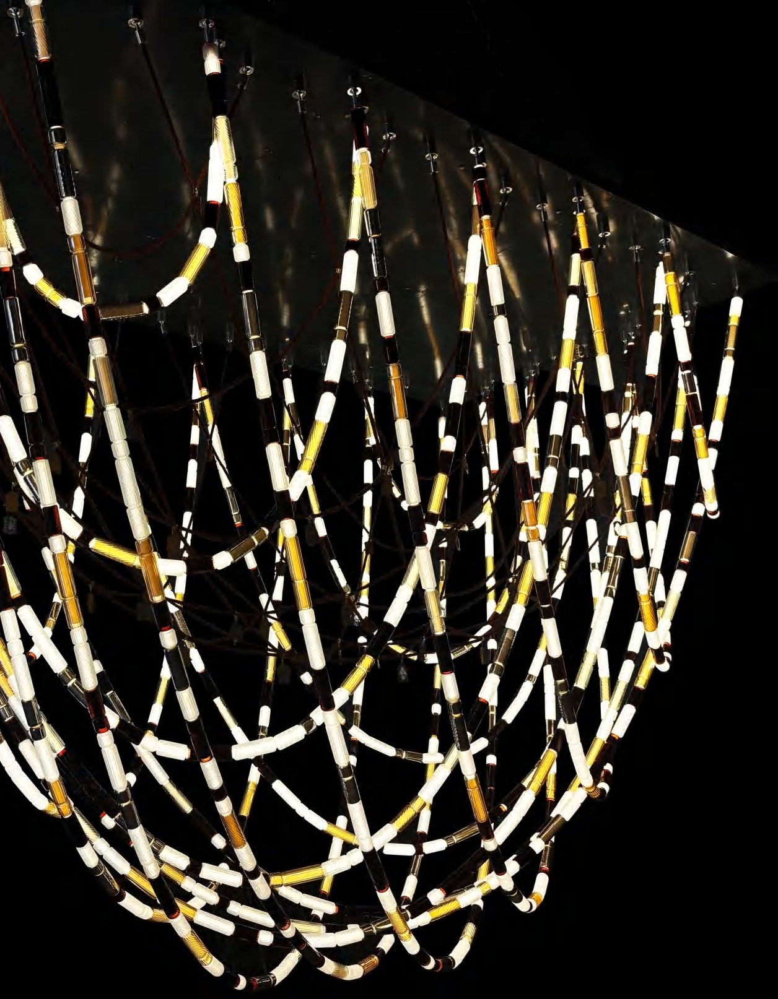
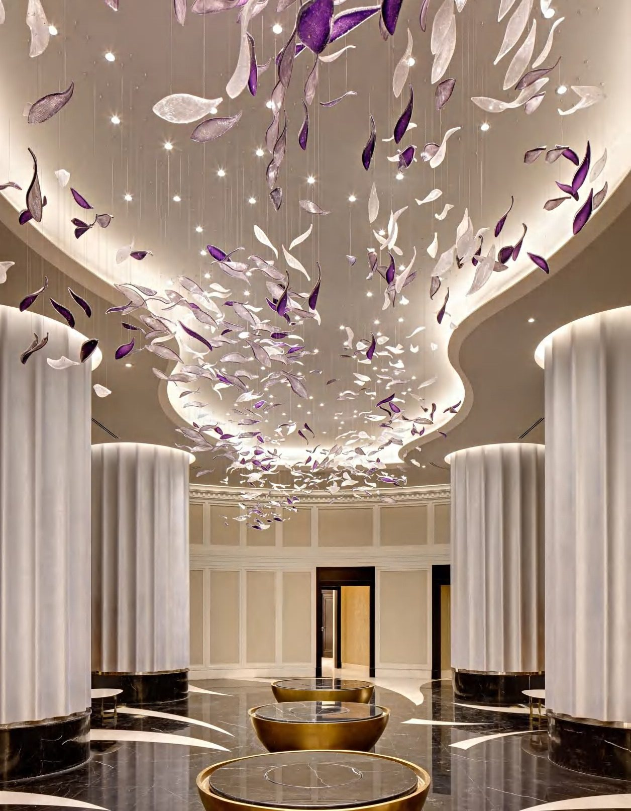

Luxury is not a price. It is a depth of material and finish the eye reads instantly — and the hand confirms on touch.
You can recognise true luxury across a room, before you have touched anything. It lives in the depth of a material and the integrity of a finish — qualities the eye reads instantly and the hand confirms a moment later.
Everything we make begins with material honesty. Solid metal rather than plate, real crystal rather than substitute, finishes developed by hand rather than ordered from a chart. The palette of materials and finishes is where a commission's character is truly set.
Brass is the spine of much of our work because it ages with grace. Polished, brushed, blackened or left to develop a living patina, it carries light differently in every state. We finish it by hand so the surface has variation and warmth — the opposite of a flat factory coat.
Crystal is not used for sparkle alone but for what it does to light — bending, softening and multiplying it. Set by eye rather than by jig, each piece is positioned for the way it will throw light into the specific room, never as a uniform field.

Most of the hours in a TSK piece are invisible — in the grinding, graining and finishing that happen after the form is complete. It is slow, unglamorous work, and it is precisely what separates a piece that impresses today from one that is still admired in thirty years.
Cheap reveals itself up close. Luxury rewards the second look.
Because the materials are honest, the work endures — and so does its value. See how these materials become form in our couture lighting and sculptural systems, or read how it all comes together in a TSK commission.
— The Atelier, The Stellar Kraft
Request finish samples and explore the metals, crystal and patinas we develop for each commission.
Begin a Commission →